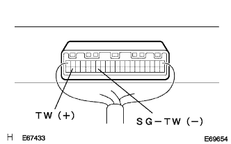
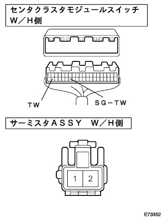

DTC F/D 水温センサ回路 |
| 表示コード | 診断内容
| 点検部位 |
|---|---|---|
| F/D |
|
|
| 手順1 | センタ クラスタ モジュール スイッチ単体点検（TW） |
IGスイッチをONにする。
|  |
SST(トヨタエレクトリカルテスター)を使用して、センタクラスタモジュールスイッチのコネクタA39(TW)端子←→A34(SG-TW)端子間の電圧を測定する。
|
| ||||
|
| ||||
| NG | |
| 手順2 | サーミスタASSY単体点検 |
サーミスタASSY(水温センサ)のコネクタを切り離す。
SST(トヨタエレクトリカルテスター)を使用して、サーミスタASSY(水温センサ)のコネクタ端子間の抵抗値を測定する。
|
| ||||
| OK | |
| 手順3 | ワイヤハーネスまたはコネクター点検（センタクラスタモジュールスイッチ-サーミスタＡＳＳＹ） |
センタクラスタモジュールスイッチのコネクタを切り離す。
|  |
SST(トヨタエレクトリカルテスター)を使用して、車両ワイヤハーネスの各コネクター端子間の導通およびGNDショート(短絡)を点検する。
| センタクラスタモジュールスイッチ側 端子番号(端子記号) | サーミスタASSY側 端子番号 |
|---|---|
| A39(TW) | 1 |
| A34(SG-TW) | 2 |
|
| ||||
| OK | ||
| ||